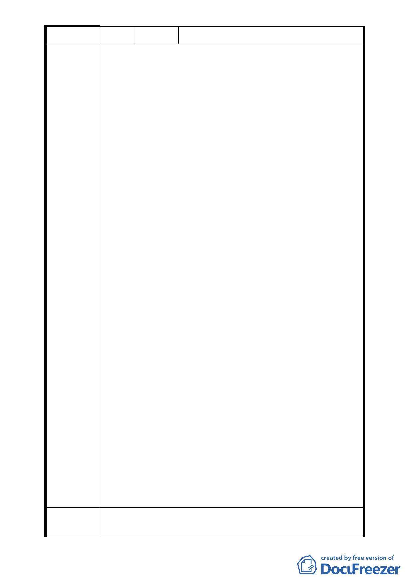

編 號 3 陳情人 吳鼎生
一、本案合康工程顧問股份有限公司(以下簡稱合康公司)當
初要求所有權人簽署臺北市中正區中正段二小段 48 地
號等筆土地「都市更新事業計畫案同意 書」時，向所有
權人表示該同意書係發起「一般都更」，未明確告知該
同意書係用於申請「促進都市再生 2010 年臺北好好
看」，據此本都市計畫變更案並非所有權人當初簽同意
書所預期目的。
二、合康公司向臺北市政府申請劃定為更新地區前，亦未提
供該都市計畫案之資料「都市計劃書圖」及「都市設計
書圖草案」予各所有權人審閱，也未就計畫內容對所有
權人詳盡解說，顯然合康公司對本案並未善盡誠信告知
之責，導致多數所有權人惶恐、不安，故本案都更將遇
重大阻力，前景難以樂觀。
三、本更新區所有權人125戶原簽「都市更新事業計畫案」同
意書人共87戶，目前已多人依民法第88條主張意思表示
錯誤，申請撤銷該同意書，故本案同意人數已逐日遞減
中。
陳 情 理 由 四、本變更都市計畫案之法令依據都市計畫法第27條第1項第
4款、都市更新條例第6、8條，其前提應由所有權人主動
提出，臺北市政府才據以辦理都市計畫變更；目前已知
本案都市計劃變更案係合康公司誤導所有權人而提出，
並非所有權人已有共識後之共同意願。目前撤銷同意書
人數增加，故本案同意人數已明顯減少。
五、本社區內101巷巷道筆直，各建築屋狀況健全，景觀尚稱
良好，不因本案之興建而擴大或改善，所謂道路交通、
消防救災，鄰里活動均呈現發展停滯現象亦有不符。令
本棟建築屋況良好，結構安全無疑，無改建之急迫性。
興建規劃中之28層大樓反使各項狀況惡化。
六、本案申請單位(合康公司)召集之會議將不同意之所有權
人排除在外，而民法第 765 條明定：「所有人，於法令
限制範圍內，得自由使用、收益、處分其所有物，並排
除他人之干涉。」另中華民國憲法第十五條明文規定：
「人民之財產權應予保障」。本案如不尊重住戶的反對
聲音而貿然實施，顯然侵犯人民之權益，勢必面臨無止
境之抗爭。
建議辦法
一、本地號之土地使用分區不同意變更為第3種住宅區(特），
請維持原第3種住宅區。
- 26 -